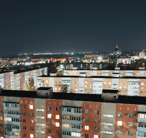

ООО «РКС-НР» совместно с Фондом капитального ремонта Московской области завершили восстановление дома 1993 года постройки на проспекте Маршала Жукова
В Мариуполе завершено восстановление дома в Орджоникидзевском районе
РКС-НР завершил работы по восстановлению объектов социальной инфраструктуры
В Мариуполе завершено восстановление дома в Орджоникидзевском районе
В Мариуполе завершены работы по благоустройству городской территории
РКС-НР продолжает развивать проекты восстановления и благоустройства
Новые объекты вошли в программу восстановления жилого фонда
Специалисты РКС-НР приступили к работе на новых объектах